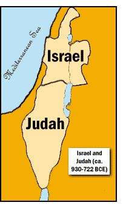
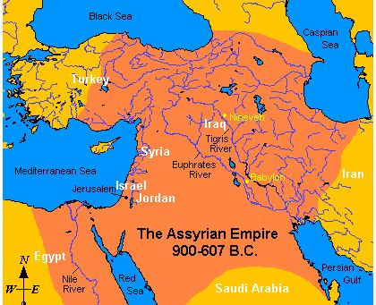

Jews revolted against religious rule after the death of Solomon. A civil war broke out and many were ransacked and evicted from homes. In 931 BCE, the country was divided.
সলোমনের মৃত্যুর পর ইহুদিরা ধর্মীয় শাসনের বিরুদ্ধে বিদ্রোহ করে। একটি গৃহযুদ্ধ শুরু হয় এবং অনেককে লুটপাট করা হয় এবং বাড়িঘর থেকে উচ্ছেদ করা হয়। 931 খ্রিস্টপূর্বাব্দে, দেশটি বিভক্ত হয়েছিল।
FIGURE 17.1: Israel and Judah Southern half with 2 Tribes under Rehoboam (a Son of Solomon) became ―Judah‖ with Jerusalem as its capital. Northern half with 10 Tribes under Jeroboam (a Son of Solomon) became ―Israel‖ with Samaria as its capital. Jeroboam built new temples, one on the southern border and another on the northern border. He placed a golden bull calf in each temple. Some of the people began worshipping the idols of Baal, and thus, their punishment became due. Israel was captured by Assyria, and within 740 to 722 BCE, the Tribes of Israel (Ten Tribes) were exiled. They are now known as the ―Lost Tribes of Israel‖. Judah survived by paying an annual tribute to Assyrian Empire.

চিত্র 17_1 / Figure 17_1
চিত্র 17.1: ইস্রায়েল এবং জুডাহ দক্ষিণ অর্ধেক 2 গোত্র নিয়ে রেহবিয়াম (সলোমনের পুত্র) এর অধীনে জেরুজালেম এর রাজধানী হয়ে "জুদাহ" হয়ে ওঠে। যারবিয়াম (সলোমনের পুত্র) অধীনে 10টি গোত্র নিয়ে উত্তর অর্ধেক "ইসরায়েল" হয়ে ওঠে এবং এর রাজধানী ছিল সামারিয়া। যারবিয়াম নতুন মন্দির নির্মাণ করলেন, একটি দক্ষিণ সীমান্তে এবং আরেকটি উত্তর সীমান্তে। তিনি প্রতিটি মন্দিরে একটি সোনার ষাঁড় বাছুর স্থাপন করেছিলেন। কিছু লোক বালের মূর্তি পূজা করতে শুরু করেছিল এবং এইভাবে তাদের শাস্তি নির্ধারিত হয়েছিল। ইস্রায়েল অ্যাসিরিয়া দ্বারা বন্দী হয়েছিল এবং 740 থেকে 722 খ্রিস্টপূর্বাব্দের মধ্যে, ইস্রায়েলের উপজাতি (দশটি উপজাতি) নির্বাসিত হয়েছিল। তারা এখন "ইসরায়েলের হারিয়ে যাওয়া উপজাতি" নামে পরিচিত। আসিরিয়ান সাম্রাজ্যের প্রতি বার্ষিক শ্রদ্ধা নিবেদন করে জুডাহ বেঁচে গিয়েছিল।
চিত্র 17_1 / Figure 17_1
FIGURE 17.2: Assyrian Empire In the verses under discussion, the ―servants given to terrible warfare‖ means the forces of Assyrian Empire. The Empire centered in Northern Iraq and survived for about Nineteen hundred years from 2500 BCE to 605 BCE.

চিত্র 17_2 / Figure 17_2
চিত্র 17.2: অ্যাসিরিয়ান সাম্রাজ্য আলোচনার অধীন আয়াতগুলিতে, "ভয়ানক যুদ্ধে প্রদত্ত দাস" মানে অ্যাসিরিয়ান সাম্রাজ্যের বাহিনী। সাম্রাজ্য উত্তর ইরাকে কেন্দ্রীভূত ছিল এবং 2500 BCE থেকে 605 BCE পর্যন্ত প্রায় উনিশ শত বছর টিকে ছিল।
চিত্র 17_2 / Figure 17_2
Then did We grant you the victory over them. We gave you increase in resources and sons and made you the more numerous in manpower. If you did well, you did well for yourselves; if you did evil, against yourselves.
অতঃপর আমি তোমাকে তাদের উপর বিজয় দান করেছি। আমি তোমাকে সম্পদ ও পুত্র-সন্তান বৃদ্ধি করে দিয়েছি এবং জনশক্তিতে তোমাকে অনেক বেশি করেছি। আপনি যদি ভাল করেন তবে আপনি নিজের জন্য ভাল করেছেন; যদি আপনি খারাপ কাজ করেন, নিজের বিরুদ্ধে।
In 715 BCE, Hezekiah became Ruler of Judah and initiated widespread religious changes, including the breaking of idols. He made a stand against Assyria by refusing to pay tribute. Assyrians attacked Judah in response and seized Jerusalem. The wall of Jerusalem was well built. To demoralize the people under seize, Assyrian Emperor announced that God of Judah was not capable to save the Jews. He listed the gods of people that were swept away by him and announced: ‗Who of those gods was able to save the land from him?‘ However, Prophet Isaiah assured Hezekiah that the city will survive. The Hebrew Bible states that in one night an angel brought death to 185,000 Assyrian troops. Emperor withdrew, and Judah prevailed. Thus, Allah gave them victory over Assyrians. The people of Judah also declined over time. The Babylonian Emperor Nebuchadnezzar defeated them, and between 605 BCE and 582 BCE, over a span of 23 years, he destroyed the Temple of Solomon and exiled the Jewish people to Babylon as captives. Thus, the Kingdom of Judah vanished. In 538 BCE, Persian Emperor Cyrus the Great defeated Babylonian Emperor and allowed Jews to return. Cyrus authorized rebuilding of the Temple. Soon the work began, and it was finished in 515 BCE. It is called the Second Temple.
715 খ্রিস্টপূর্বাব্দে, হিজেকিয়া জুদার শাসক হন এবং মূর্তি ভাঙ্গা সহ ব্যাপক ধর্মীয় পরিবর্তনের সূচনা করেন। তিনি শ্রদ্ধা নিবেদন করতে অস্বীকার করে অ্যাসিরিয়ার বিরুদ্ধে অবস্থান নেন। আসিরীয়রা জবাবে জুডা আক্রমণ করে এবং জেরুজালেম দখল করে। জেরুজালেমের প্রাচীরটি ভালভাবে নির্মিত হয়েছিল। জব্দ করা লোকদের নিরাশ করার জন্য, অ্যাসিরিয়ান সম্রাট ঘোষণা করেছিলেন যে ইহুদীদের ঈশ্বর ইহুদিদের রক্ষা করতে সক্ষম নন। তিনি লোকেদের দেবতাদের তালিকা করেছিলেন যেগুলি তার দ্বারা ভেসে গিয়েছিল এবং ঘোষণা করেছিলেন: ‘ওই দেবতাদের মধ্যে কে তার কাছ থেকে দেশকে বাঁচাতে পেরেছিল?’ যাইহোক, নবী ইশাইয়া হিজেকিয়াকে আশ্বাস দিয়েছিলেন যে শহরটি বেঁচে থাকবে। হিব্রু বাইবেল বলে যে এক রাতে একজন দেবদূত 185,000 অ্যাসিরিয়ান সৈন্যের মৃত্যু নিয়ে আসেন। সম্রাট প্রত্যাহার করে নিলেন, এবং যিহূদা জয়ী হল। এইভাবে, আল্লাহ তাদের আসিরিয়ানদের উপর বিজয় দান করেন। যিহূদার লোকেরাও সময়ের সাথে সাথে হ্রাস পেয়েছিল। ব্যাবিলনের সম্রাট নেবুচাদনেজার তাদের পরাজিত করেন এবং খ্রিস্টপূর্ব 605 থেকে 582 খ্রিস্টপূর্বাব্দের মধ্যে, 23 বছরের ব্যবধানে, তিনি সলোমনের মন্দির ধ্বংস করেন এবং ইহুদি জনগণকে বন্দী হিসাবে ব্যাবিলনে নির্বাসিত করেন। এইভাবে, যিহূদার রাজ্য অদৃশ্য হয়ে গেল। 538 খ্রিস্টপূর্বাব্দে, পারস্য সম্রাট সাইরাস দ্য গ্রেট ব্যাবিলনীয় সম্রাটকে পরাজিত করেন এবং ইহুদিদের ফিরে যাওয়ার অনুমতি দেন। সাইরাস মন্দিরের পুনর্নির্মাণের অনুমোদন দেন। শীঘ্রই কাজ শুরু হয় এবং এটি 515 খ্রিস্টপূর্বাব্দে শেষ হয়। একে দ্বিতীয় মন্দির বলা হয়।
So, when the second of the warnings came to pass to disfigure your faces and to enter your temple, as they had entered it before, and to visit with destruction all that fell into their power.
সুতরাং, যখন দ্বিতীয় সতর্কবার্তাটি আপনার মুখ বিকৃত করার জন্য এবং আপনার মন্দিরে প্রবেশ করার জন্য, যেমনটি তারা আগে প্রবেশ করেছিল, এবং তাদের ক্ষমতার মধ্যে থাকা সমস্ত ধ্বংসের সাথে পরিদর্শন করার জন্য এসেছিল।
In 63 BCE, Jewish Land was captured by Romans. In 33 CE, Jews crucified Jesus Christ—as it appeared to them. In 70 CE, the Romans extensively destroyed the Second Temple to suppress a Jewish revolt. The city was sacked, and a massive genocide took place. The suppression continued, and in 135 CE, Roman Emperor Hadrian killed and expelled the Jews from Jerusalem. Hadrian then built the Temple of Jupiter on the Temple Mount. Jerusalem was no longer a city of the Jewish people, and its crown, the Second Temple, was lost. Thus, the face of Judah was disfigured. Over time, the Romans embraced Christianity. In 325 CE, Roman Emperor Constantine destroyed the Temple of Jupiter. Following this, the Romans allowed the Jews to return to Jerusalem. Jews returned, but they could not rebuild the Temple. In 637 CE, Muslims captured Jerusalem. The Temple Mount was filled with debris from the old Temple. Caliph Omar cleared the area and established a small thatched mosque (Al-Aqsa Mosque) for regular prayers and caliphate activities during his time there. Subsequent Umayyad caliphs further developed the mosque and built the Dome of the Rock. It fulfilled a Prophecy of Holy Bible:
63 খ্রিস্টপূর্বাব্দে, ইহুদি ভূমি রোমানদের দ্বারা দখল করা হয়েছিল। 33 খ্রিস্টাব্দে, ইহুদিরা যিশু খ্রিস্টকে ক্রুশবিদ্ধ করেছিল—যেমন এটি তাদের কাছে দেখা গিয়েছিল। 70 খ্রিস্টাব্দে, ইহুদি বিদ্রোহ দমন করার জন্য রোমানরা ব্যাপকভাবে দ্বিতীয় মন্দির ধ্বংস করে। শহরটি বরখাস্ত করা হয়েছিল, এবং একটি ব্যাপক গণহত্যা সংঘটিত হয়েছিল। দমন অব্যাহত ছিল এবং 135 খ্রিস্টাব্দে, রোমান সম্রাট হ্যাড্রিয়ান জেরুজালেম থেকে ইহুদিদের হত্যা ও বহিষ্কার করেন। হ্যাড্রিয়ান তখন টেম্পল মাউন্টে জুপিটারের মন্দির তৈরি করেছিলেন। জেরুজালেম আর ইহুদিদের শহর ছিল না, এবং এর মুকুট, দ্বিতীয় মন্দির, হারিয়ে গেছে। এইভাবে, যিহূদার মুখ বিকৃত হয়েছিল। সময়ের সাথে সাথে, রোমানরা খ্রিস্টধর্ম গ্রহণ করে। 325 খ্রিস্টাব্দে, রোমান সম্রাট কনস্টানটাইন জুপিটারের মন্দির ধ্বংস করেছিলেন। এর পরে, রোমানরা ইহুদিদের জেরুজালেমে ফিরে যাওয়ার অনুমতি দেয়। ইহুদিরা ফিরে এসেছিল, কিন্তু তারা মন্দির পুনর্নির্মাণ করতে পারেনি। ৬৩৭ খ্রিস্টাব্দে মুসলমানরা জেরুজালেম দখল করে। টেম্পল মাউন্ট পুরানো মন্দিরের ধ্বংসাবশেষে ভরা ছিল। খলিফা ওমর এলাকাটি পরিষ্কার করেন এবং সেখানে তার সময়ে নিয়মিত নামাজ ও খেলাফত কার্যক্রমের জন্য একটি ছোট খড়ের মসজিদ (আল-আকসা মসজিদ) প্রতিষ্ঠা করেন। পরবর্তী উমাইয়া খলিফারা মসজিদটির আরও উন্নয়ন করেন এবং ডোম অফ দ্য রক নির্মাণ করেন। এটি পবিত্র বাইবেলের একটি ভবিষ্যদ্বাণী পূর্ণ করেছে:
―This message thou shall give him from the Lord God of Host: Here is one takes his name from the Branch, where his feet have trodden, spring there shall be. He it is shall rebuild the Lord‘s Temple; builder of the Lord Temple to what honors he shall come! A priest shall be on his throne!‖ –Zacharias 6 (12-13), The Holy Bible by SHEED & WARD, INC. NEW YORK 1956 (It is a Catholic Bible)
- বাহিনীগণের ঈশ্বর সদাপ্রভুর কাছ থেকে তুমি তাকে এই বার্তা দেবে: এখানে একজন তার নাম শাখা থেকে নিচ্ছে, যেখানে তার পা মাড়াচ্ছে, সেখানে বসন্ত হবে। তিনিই প্রভুর মন্দির পুনর্নির্মাণ করবেন; প্রভুর মন্দিরের নির্মাতা তিনি কী সম্মানে আসবেন! একজন পুরোহিত তার সিংহাসনে থাকবেন!'' -জাকারিয়াস 6 (12-13), শেড অ্যান্ড ওয়ার্ডের পবিত্র বাইবেল, ইনক নিউ ইয়র্ক 1956 (এটি একটি ক্যাথলিক বাইবেল)
In the above verses, the 'Branch' is identified by the words: '...where his feet have trodden, spring there shall be...' This identifies the 'Branch' as the 'Branch of Ismail.' The Zam-Zam sprang from the toddling feet of Ismail, and the 'Branch of Ismail' is known as the 'Tribe of Quraysh.' In the above verses, the phrase 'A priest shall be on his throne!' refers to a Caliph. A Caliph serves as both a priest and a ruler. Thus, according to the verses, a Caliph from the Tribe of Quraysh would rebuild the Temple. In reality, Hazrat Omar and the subsequent Quraysh caliphs restored the mount by building the Al-Aqsa Mosque and the Dome of the Rock.
উপরের আয়াতগুলিতে 'শাখা'কে এই শব্দ দ্বারা চিহ্নিত করা হয়েছে: '...যেখানে তার পা মাড়াবে, সেখানে বসন্ত থাকবে...' এটি 'শাখা'কে 'ইসমাইলের শাখা' হিসেবে চিহ্নিত করে। জম-জম ইসমাইলের শিশুর পা থেকে উৎপন্ন হয়েছে এবং 'ইসমাইলের শাখা' 'কুরাইশ গোত্র' নামে পরিচিত। উপরের আয়াতগুলিতে 'একজন পুরোহিত তার সিংহাসনে থাকবেন!' একজন খলিফাকে বোঝায়। একজন খলিফা পুরোহিত এবং শাসক উভয়ের দায়িত্ব পালন করেন। এইভাবে, আয়াত অনুসারে, কুরাইশ গোত্রের একজন খলিফা মন্দিরটি পুনর্নির্মাণ করবেন। বাস্তবে, হজরত ওমর এবং পরবর্তী কুরাইশ খলিফারা আল-আকসা মসজিদ এবং পাথরের গম্বুজ তৈরি করে পর্বতটি পুনরুদ্ধার করেছিলেন।
FIGURE 17.3 Al Aksa, Dome of Rock, Wailing Wall
চিত্র 17_3 / Figure 17_3
চিত্র 17.3 আল আকসা, ডোম অফ রক, ওয়েলিং ওয়াল
চিত্র 17_3 / Figure 17_3
It may be that your Lord may show Mercy unto you, but if you revert, We shall revert. And we have made hell a prison for those who reject. Verily, this Qur'an does guide to that which is most right and gives the glad tidings to the Believers who work deeds of righteousness that they shall have a magnificent reward. And to those who believe not in the hereafter, that We have prepared for them, is a penalty grievous.
হতে পারে যে, তোমাদের প্রতিপালক তোমাদের প্রতি অনুগ্রহ করবেন, কিন্তু যদি তোমরা ফিরে যাও, তবে আমরা প্রত্যাবর্তন করব। আর প্রত্যাখ্যানকারীদের জন্য আমরা জাহান্নামকে কারাগার বানিয়েছি। নিঃসন্দেহে, এই কোরান সবচেয়ে সঠিক দিক নির্দেশনা দেয় এবং মুমিনদেরকে সুসংবাদ দেয় যারা সৎ কাজ করে যে তাদের জন্য রয়েছে একটি মহান পুরস্কার। আর যারা পরকালে বিশ্বাস করে না, আমি তাদের জন্য যা প্রস্তুত করে রেখেছি, তাদের জন্য রয়েছে কঠিন শাস্তি।
The above verses state: ―It may be that your Lord may show Mercy unto you…‖ In preceding verses, the Quran addressed the disintegration of the Jewish state. So, the phrase "Lord may show Mercy unto you‖ implies that the Lord may restore them to Jerusalem and return their statehood. This verse is related to a prophecy in the Holy Bible:
উপরোক্ত আয়াতে বলা হয়েছে: "হয়তো তোমার প্রভু তোমাদের প্রতি করুণা বর্ষণ করবেন..." পূর্ববর্তী আয়াতে কুরআন ইহুদি রাষ্ট্রের বিচ্ছিন্নতাকে সম্বোধন করেছে। সুতরাং, "প্রভু আপনার প্রতি দয়া দেখান" এই বাক্যাংশটি বোঝায় যে প্রভু তাদের জেরুজালেমে পুনরুদ্ধার করতে পারেন এবং তাদের রাষ্ট্রীয়তা ফিরিয়ে দিতে পারেন৷ এই আয়াতটি পবিত্র বাইবেলের একটি ভবিষ্যদ্বাণীর সাথে সম্পর্কিত:
―Flocks my ransoming, see how they gather at my call! Thriving now as they throve long since, yet scattered through the world, in those distant lands they shall remember me; with spirit revived, they and their children shall return. Back from Egypt, back from Assyria I will summon them, rally them, to Galaad and Lebanon bring them home; and that home shall be too small for them. Crossed, yonder straits, the sea‘s wave checked, depth of the river disappointed of their prey! As Syria‘s pride brought low, empire of Egypt cut down! In the Lord they shall find strength, under the protection come and go; so runs the divine promise.‖ – Zacharius, Chapter 10: 8–12, The Holy Bible (Knox).
- ঝাঁকে ঝাঁকে আমার মুক্তিপণ, দেখ ওরা আমার ডাকে কেমন জড়ো হয়! এখন উন্নতি লাভ করছে যেমন তারা দীর্ঘকাল ধরে উত্থিত, তবুও পৃথিবীতে ছড়িয়ে ছিটিয়ে সেই দূরবর্তী দেশে তারা আমাকে স্মরণ করবে; আত্মা পুনরুজ্জীবিত, তারা এবং তাদের সন্তানদের ফিরে আসবে. মিশর থেকে ফিরে, অ্যাসিরিয়া থেকে ফিরে আমি তাদের ডেকে আনব, তাদের সমাবেশ করব, গালাদ ও লেবাননে তাদের বাড়িতে নিয়ে আসব; এবং সেই বাড়ি তাদের জন্য খুব ছোট হবে। পেরিয়ে গেছে, ওপারের প্রণালী, সমুদ্রের ঢেউ চেক করেছে, নদীর গভীরতা তাদের শিকারে হতাশ! সিরিয়ার অহংকার কমে যাওয়ায় মিশরের সাম্রাজ্য ভেঙে পড়েছে! প্রভুতে তারা শক্তি পাবে, সুরক্ষার অধীনে আসা এবং যায়; তাই ঐশ্বরিক প্রতিশ্রুতি চালায়।'' - জাকারিয়াস, অধ্যায় 10: 8-12, পবিত্র বাইবেল (নক্স)।
Jews regained their nationhood after approximately 2,000 years. During World War I, the joint forces of Britain and France (the superpowers of the time) defeated the Ottoman Empire and captured the Middle East. They established the countries of the region, including Palestine as the home of Israel. However, many Jews were initially uninterested in moving to the barren desert, and Arabs protested as well. Most Jewish communities were living in the cities of Europe and America. After the Holocaust during World War II, many European Jews felt compelled to immigrate to Palestine. Subsequently, numerous Jews from Africa and the Middle East also joined them. They have captured Jerusalem in 1967. However, there is a warning in the verses under discussion: ―but if you revert, We shall revert…Verily this Qur'an does guide to that which is most right‖. This implies that enmity against Muslims would come at a significant cost. Their enmity with their neighbors during the times of Saul, David, and Solomon differs from their enmity with their neighbors today. Currently, their neighbors are followers of the Quran, which guides to that which is most right. Therefore, their hostilities are considered wrongdoings, and they may face punishment from God for such actions, as the verses under discussion say: "It may be that your Lord may show Mercy unto you, but if you revert, We shall revert. And we have made hell a prison for those who reject. Verily, this Qur'an does guide to that which is most right…‖ Although Jews have captured Jerusalem, they do not ascend the Temple Mount, citing that they are not pure enough to approach the 'Holy of Holies.' Instead, they go to the Wailing Wall. Al-Aqsa Mosque and the Dome of the Rock remain under the custodianship of the King of Jordan, who is a descendant of the Branch of Ismail.
প্রায় 2,000 বছর পর ইহুদিরা তাদের জাতীয়তা ফিরে পায়। প্রথম বিশ্বযুদ্ধের সময়, ব্রিটেন এবং ফ্রান্সের যৌথ বাহিনী (তৎকালীন পরাশক্তি) অটোমান সাম্রাজ্যকে পরাজিত করে এবং মধ্যপ্রাচ্য দখল করে। তারা ফিলিস্তিনসহ এ অঞ্চলের দেশগুলোকে ইসরায়েলের আবাসস্থল হিসেবে প্রতিষ্ঠা করে। যাইহোক, অনেক ইহুদি প্রথমে অনুর্বর মরুভূমিতে যেতে আগ্রহী ছিল না এবং আরবরাও প্রতিবাদ করেছিল। বেশিরভাগ ইহুদি সম্প্রদায় ইউরোপ ও আমেরিকার শহরে বাস করত। দ্বিতীয় বিশ্বযুদ্ধের সময় হলোকাস্টের পর, অনেক ইউরোপীয় ইহুদি ফিলিস্তিনে অভিবাসন করতে বাধ্য হয়। পরবর্তীকালে আফ্রিকা ও মধ্যপ্রাচ্য থেকেও অসংখ্য ইহুদি তাদের সঙ্গে যোগ দেয়। তারা 1967 সালে জেরুজালেম দখল করেছে। যাইহোক, আলোচ্য আয়াতে একটি সতর্কবাণী রয়েছে: "কিন্তু আপনি যদি ফিরে যান, আমরা ফিরিয়ে দেব...নিশ্চয়ই এই কোরান সবচেয়ে সঠিক দিক নির্দেশনা দেয়"। এটা বোঝায় যে মুসলমানদের বিরুদ্ধে শত্রুতা একটি উল্লেখযোগ্য মূল্য দিতে হবে। শৌল, ডেভিড এবং সলোমনের সময়ে তাদের প্রতিবেশীদের সাথে তাদের শত্রুতা আজকের তাদের প্রতিবেশীদের সাথে তাদের শত্রুতার থেকে আলাদা। বর্তমানে, তাদের প্রতিবেশীরা কুরআনের অনুসারী, যা সবচেয়ে সঠিক পথের দিকে পরিচালিত করে। অতএব, তাদের শত্রুতাকে অন্যায় হিসাবে বিবেচনা করা হয়, এবং তারা এই ধরনের কাজের জন্য ঈশ্বরের কাছ থেকে শাস্তির সম্মুখীন হতে পারে, যেমন আলোচ্য আয়াতে বলা হয়েছে: "এটা হতে পারে যে আপনার প্রভু আপনার প্রতি দয়া করবেন, কিন্তু আপনি যদি ফিরে যান তবে আমরা ফিরে যাব। এবং যারা প্রত্যাখ্যান করেন তাদের জন্য আমরা জাহান্নামকে কারাগার বানিয়েছি। সত্যই, এই কোরআন সেই বিষয়ে নির্দেশনা দেয় যা সবচেয়ে সঠিক, যদিও তারা ইহুদিদেরকে বন্দী করেনি... টেম্পল মাউন্ট, উদ্ধৃত করে যে তারা 'পবিত্র পবিত্র'-এর কাছে যাওয়ার জন্য যথেষ্ট বিশুদ্ধ নয়। পরিবর্তে, তারা বিলাপ করা প্রাচীর যান. আল-আকসা মসজিদ এবং ডোম অফ দ্য রক জর্ডানের রাজার তত্ত্বাবধানে রয়েছে, যিনি ইসমাইলের শাখার বংশধর।
Man invokes for evil as he invokes for good; for man is ever hasty. Segment 2: Destiny and Deeds
মানুষ ভালোর জন্য যেমন আহ্বান করে তেমনি মন্দকেও ডাকে; কারণ মানুষ সবসময় তাড়াহুড়া করে। সেগমেন্ট 2: নিয়তি এবং কাজ
We have made the Night and the Day as two signs: The sign of the night, We have made dark; while the sign of the day, We have made bright that you may seek bounty from your Lord; and that you may know the number and count of the years; all things have We explained in detail.
আমি রাত ও দিনকে করেছি দুটি নিদর্শন: রাতের নিদর্শন, অন্ধকার করেছি; যখন দিনের নিদর্শন, আমি উজ্জ্বল করেছি যাতে তোমরা তোমাদের পালনকর্তার অনুগ্রহ অন্বেষণ করতে পার। এবং যাতে আপনি বছরের সংখ্যা এবং গণনা জানতে পারেন; সব কিছু আমরা বিস্তারিতভাবে ব্যাখ্যা করেছি।
The universe is full of stars emitting light. Every line of sight should end on the surface of a star, causing the entire sky to appear as bright as the Sun (related to Olber‘s Paradox). There should be no night anywhere. However, we need dark nights. The darkness of space results from the expansion of the universe—the light emitted by the stars thins out as the universe expands:
মহাবিশ্ব আলো নির্গত নক্ষত্রে পূর্ণ। দৃষ্টিভঙ্গির প্রতিটি লাইন একটি নক্ষত্রের পৃষ্ঠে শেষ হওয়া উচিত, যার ফলে সমগ্র আকাশ সূর্যের মতো উজ্জ্বল দেখাবে (ওলবারের প্যারাডক্স সম্পর্কিত)। কোথাও যেন রাত না হয়। যাইহোক, আমাদের অন্ধকার রাত দরকার। মহাবিশ্বের সম্প্রসারণের ফলে মহাকাশের অন্ধকার হয়- মহাবিশ্ব প্রসারিত হওয়ার সাথে সাথে তারা দ্বারা নির্গত আলো পাতলা হয়ে যায়:
―What! Are you more difficult to create or the sky? He has constructed it. He has raised its thickness, and He has given it order and perfection. Its night does He endow with darkness, and its splendor does He bring out. And the land moreover has He extended. He draws out there from its moisture and its pasture. And the mountains He firmly fixed: For use and convenience to you and your cattle.‖ [Al Quran 79:27-33] Thus, the verses under discussion say: ―The sign of the night, We have made dark;‖ The Sun emits an enormous amount of light every second. It is a sign from God: ―...while the sign of the day, We have made bright …‖ The seven colors of sunlight are beneficial for our vision. We can appreciate the bounties of nature by observing their colors: a ripe mango is yellow, a ruby ranges from pink to red, and an emerald is green: ―...that you may seek bounty from your Lord…‖ The rotation of the tilted Earth (with an axial tilt of 23.5 degrees) along an oval-shaped orbit causes the seasons to change, allowing us to measure the solar year: "...and that you may know the number and count of the year..." Time is passing—we are moving closer to the Day of Judgment.
--কি! তোমায় সৃষ্টি করা বেশি কঠিন নাকি আকাশ? তিনি এটি নির্মাণ করেছেন। তিনি এর পুরুত্ব বাড়িয়েছেন, এবং তিনি এটিকে শৃঙ্খলা ও পরিপূর্ণতা দিয়েছেন। এর রাত্রি তিনি অন্ধকারে ধারণ করেন এবং এর জাঁকজমক বের করেন। আর জমিও তিনি বাড়িয়ে দিয়েছেন। তিনি সেখানকার আর্দ্রতা ও চারণভূমি থেকে বের করেন। এবং পর্বতগুলি তিনি দৃঢ়ভাবে স্থির করেছেন: আপনার এবং আপনার গবাদি পশুদের ব্যবহার এবং সুবিধার জন্য।'' [আল কুরআন 79:27-33] সুতরাং, আলোচ্য আয়াতগুলি বলে: "রাত্রির চিহ্ন, আমরা অন্ধকার করেছি;" সূর্য প্রতি সেকেন্ডে প্রচুর পরিমাণে আলো নির্গত করে। এটি ঈশ্বরের একটি চিহ্ন: "...যদিও দিনের চিহ্ন, আমরা উজ্জ্বল করেছি ..." সূর্যের আলোর সাতটি রঙ আমাদের দৃষ্টিশক্তির জন্য উপকারী। আমরা তাদের রঙ পর্যবেক্ষণ করে প্রকৃতির অনুগ্রহকে উপলব্ধি করতে পারি: একটি পাকা আম হলুদ, একটি রুবি গোলাপী থেকে লাল এবং একটি পান্না সবুজ: ―...যেন আপনি আপনার প্রভুর কাছ থেকে অনুগ্রহ চাইতে পারেন...‖ কাত পৃথিবীর ঘূর্ণন (একটি অক্ষীয় কাত সহ) ঋতুতে 23.5 ডিগ্রী বা ঋতু পরিবর্তন করে। আমাদের সৌর বছর পরিমাপ করার অনুমতি দেয়: "...এবং আপনি বছরের সংখ্যা এবং গণনা জানতে পারেন..." সময় অতিবাহিত হচ্ছে - আমরা বিচার দিবসের কাছাকাছি চলে যাচ্ছি।
Every man's fate We have fastened on his neck; on the Day of Judgment, We shall bring out for him a book, which he will see spread open: "Read your record; sufficient is your soul this day to make out an account against you."
প্রত্যেক মানুষের ভাগ্য আমরা তার গলায় বেঁধে দিয়েছি; বিচারের দিন, আমরা তার জন্য একটি কিতাব বের করব, যা সে খোলা দেখতে পাবে: "তোমার আমলনামা পড়, তোমার বিরুদ্ধে হিসাব করার জন্য আজ তোমার আত্মা যথেষ্ট।"